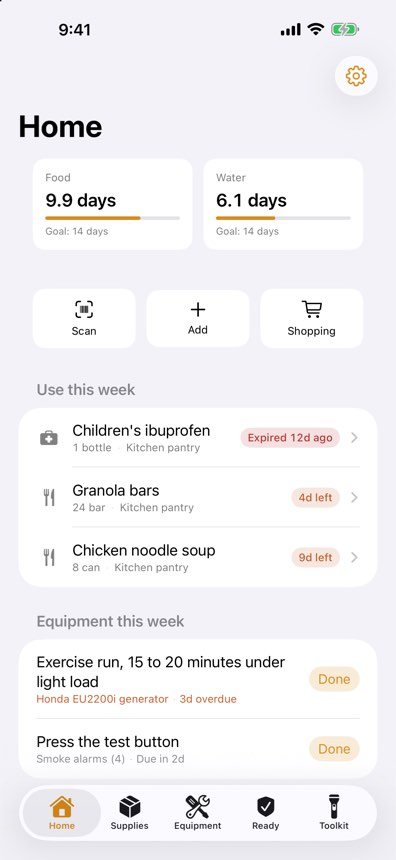
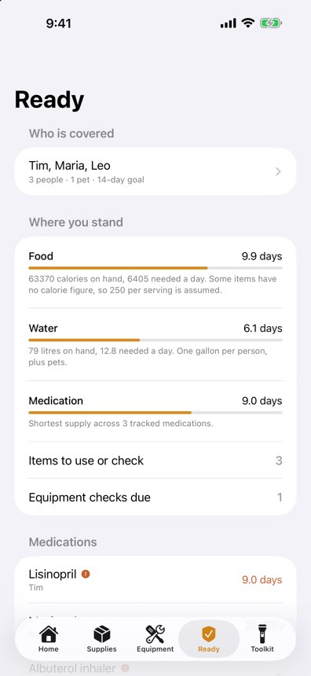
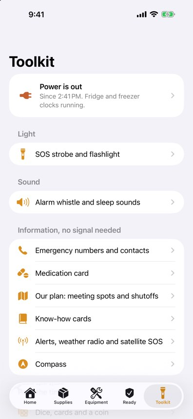
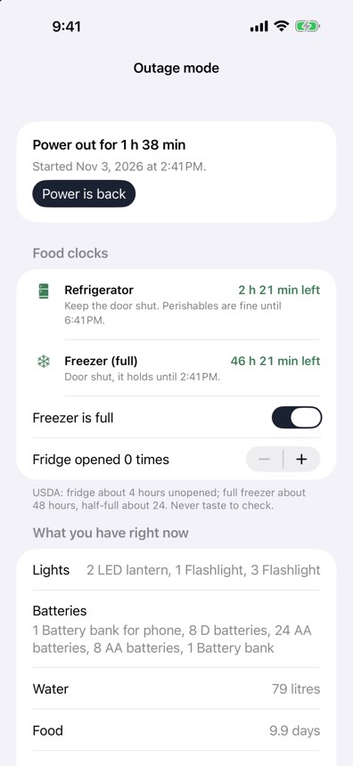

Lantern: Household Readiness keeps a list of the food, water, medicine and gear you already have, and shows how many days your household is covered for. This guide walks through the app in plain steps. Start at the top, or jump to the part you need.
Start here
Your first ten minutes.
The first time you open Lantern, three short screens set you up. Tap Next to move on and Done at the end. There is no account to create.
Add your household
On the Who's here screen, tap Add a person and start with yourself. A name is enough. Age, weight and height are optional, and they make the food estimate more personal. Tap Save.
Have a pet? Tap Add a pet. Then pick Days to cover: 3, 7, 14 or 30. Lantern starts at 14.
Add supplies by scanning a barcode
On the Home tab, tap Scan. Your iPhone asks to use the camera the first time. Hold the barcode inside the frame. Lantern then asks for the printed date, if there is one, so point the camera at that next.
Under Put it in, pick where the item is kept. Tap New item, check the details and tap Save. The scanner stays open, so you can work through a whole shelf. Tap Done when you finish.
No barcode? Tap Add on Home to type an item in. Or open Supplies and add a starter pack, a ready-made list you can adjust.
See your days covered
Back on Home, look under Where you stand. Food and Water show how many days your household is covered for, next to your goal. The more you add, the truer the numbers get.
The Ready tab shows the same numbers in more detail, with a list of gaps to close.
Turn on reminders
On Home, tap the gear icon at the top right to open Settings. Under Reminders, switch on Weekly digest and due-date reminders and allow notifications when your iPhone asks. Reminders stay off until you do this.

Home: food and water in days, and what to use this week.
Home tab
Home shows where you stand.
Home is the dashboard. From the top of the screen down, here is what you see.
Your people and pets. A row of circles. Tap one to open that profile. Tap the plus circle to add someone. The line below the circles opens the full household.
Where you stand. Tiles for Food, Water and Medication show days covered against your goal. A fourth tile shows Pet food or Gear checks.
Scan, Add, Shopping. Scan opens the camera. Add opens a blank item to fill in by hand. Shopping opens your shopping list.
Close the gaps. This shows up when something is short of your goal. Each gap has an Add to shopping list button.
Who can do what. Who knows first aid, who can run the generator, who needs help to leave. It fills in as you add skills and needs to each person.
Use this week. Items that are close to their date or past it. Tap one to open it.
Gear this week. Checks due in the next seven days. Tap Done when you finish one.
The gear icon at the top right opens Settings. If a weather alert is in effect for a place you saved, it shows at the very top of Home.
Supplies tab
Supplies is the full list.
Supplies holds every item you track. The ones with the nearest dates sit at the top.
Find things
Type in Search supplies to search by name, brand or location.
Tap the filter icon at the top left to show one category, such as Food, Water or Medicine & first aid. Choose All categories to see everything again.
Tap the circle with three dots at the top right to sort By date, By name or By location.
Add things
Tap the barcode icon at the top right to scan.
In the three dots menu, choose Add by hand to type an item in.
Choose Add a starter pack for a ready-made list: Ready.gov basic kit, Two-week pantry for two or Power outage basics. A starter pack adds items with today's date and an estimated best-by date. Edit the quantities afterwards to match what you really have.
Choose Kits and go-bags to start a Go-bag, Car kit or Pet bag from a list. Lantern shows what is still missing. Items in a kit still count toward your days covered.
Keep the list true
Swipe a row to the left and tap Used 1 when you use one. When an item runs out, Lantern adds it to your shopping list.
Swipe a row to the right and tap Checked when you have looked at an item and it is fine.
Tap an item to see its dates and where it is kept. Tap Edit to change it.
Open Shopping list from the three dots menu, or tap Shopping on Home. Tap Bought next to an item to put it back into your supplies.
If a package has no printed date, Lantern can estimate one from its shelf-life table of more than 90 common items. To set up the places you keep things, such as the pantry or the garage, open Settings and tap Storage locations.
Gear tab
Gear keeps the checks on schedule.
Gear is for the equipment you count on: the generator, the smoke alarms, the fire extinguisher, a power station. Each one comes with a check schedule you can edit.
Open the Gear tab and tap Add gear, or the plus at the top right.
Pick a Kind, such as Portable generator, Smoke alarm, Carbon monoxide alarm or Fire extinguisher. Give it a name if you want a different one.
Leave Add the standard checks switched on, then tap Save.
The list shows what is due next. Tap a piece of gear to see its Checks and History. Tap Done beside a check when you finish it, Add a check to make your own, and Add a note to log what you did.
Checks due this week also appear on Home under Gear this week. On the Free plan, due dates show in the app. Notifications for gear checks come with a paid plan.
Ready tab
Ready turns the list into days.
Ready answers one question: if you had to live on what is in the house, how long would it last?
Who is covered. The people and pets Lantern is counting, and your goal in days. Tap the row to open the household.
Where you stand.Food compares the calories you have with what your household needs each day. Water counts one gallon per person per day, plus pets. Medication shows the shortest supply among the medications you track. Pet food appears when you have pets.
Medications. Each tracked medication with its days of supply.
Gaps. What is short of your goal. Tap Add to shopping list on any gap.
To change the goal, tap the row under Who is covered and pick a new Days to cover.
These are planning numbers from public sources, not medical advice.

Ready: who is covered, and each need in days.
Toolkit tab
The Toolkit is for the night itself.
The Toolkit is what the phone can do for you when the lights are out. It is included on every plan, and most of it works with no signal.
Outage mode. Fridge and freezer clocks, and a checklist for a power cut. See When the power goes out.
SOS strobe and flashlight. The camera light as a steady light, a slow blink or SOS, and the screen as a lamp.
Alarm whistle and sleep sounds. Tap Sound the alarm for a loud whistle to help someone find you. Sleep sounds can stop on a timer.
Emergency numbers and contacts. National numbers, plus your own list under Mine. Tap Add a contact for the power company, the vet and the people you would call. Tap Print or save this list for a paper copy.
Medication card. Who takes what, when and how, ready to share or print.
Our plan: meeting spots and shutoffs. Where you meet, who picks up the kids, where the gas, water and electrical shutoffs are, with photos. Tap Print or save the plan for the fridge.
Know-how cards. Short step-by-step cards from public sources such as the CDC, the USDA and Ready.gov. Making water safe, running a generator, treating a burn.
Alerts, weather radio and satellite SOS. How to keep phone alerts on, the NOAA Weather Radio frequencies, and weather alerts for places you save.
Compass. A simple bearing. Hold the phone flat.
Ready-to-send texts. Short messages already written for you.
Games for the long evening. Games for one phone passed around, with no signal needed.
Nothing in Lantern replaces 911 or Emergency SOS. If someone is hurt or in danger, call first.

The Toolkit, during an outage.
Outage mode
When the power goes out.
Outage mode turns one screen into your checklist. Start it as soon as the lights go out, because the clocks count from the moment you tap.
Open Toolkit and tap Outage mode.
Tap Power just went out.
Under Food clocks, watch Refrigerator and Freezer count down. Lantern follows USDA guidance: about 4 hours for a fridge kept shut, about 48 hours for a full freezer and about 24 for a half-full one.
Set Freezer is full to match your freezer. Tap the plus on Fridge opened each time someone opens the door.
When the lights come back, tap Power is back. The outage is saved under Past outages.
The same screen also shows What you have right now (lights, batteries, water, food and medication from your supplies), battery tips under This phone, and Safety cards for the generator, the carbon monoxide alarm and food safety.
Under Check in, switch on Remind me to check in with my people and choose every 2, 4, 6 or 12 hours.

Outage mode: the food clocks are running.
SOS light
In the Toolkit, tap SOS strobe and flashlight. Under SOS strobe, choose Steady, Slow blink or SOS. SOS is three short flashes, three long, three short, repeated. Slow blink uses far less battery. Tap Turn off to stop.
Under Screen light, choose White screen light, Warm screen light, Candle or Be seen: flashing screen. Tap the screen to show the Close button.
A flashing light can trigger a seizure in someone with photosensitive epilepsy. Point it away from faces, at the sky or a window.
Medication card
In the Toolkit, tap Medication card. It lists each person's medications with the dose, the times, how to take it and what to avoid, plus allergies. It fills itself in from the medications you add under each person.
Tap Share as text to send it to a family member or a caregiver. Tap Print or save PDF for a paper copy to keep on the fridge and in the go-bag.
Ready-to-send texts
In the Toolkit, tap Ready-to-send texts. Pick a message: We're safe, We're leaving, We made it, We need a hand or Checking on you. Once you have set a meeting place in Our plan, there is also Meet at our spot.
Tap Send as text. Messages opens with the words filled in, and you choose who gets it. Lantern fills in the names, the time the power went out and your meeting place, so you do not have to type in the dark.
Weather alerts
Watch the places you care about.
Save a place and Lantern shows the watches and warnings in effect there. Home, a parent's house, the school. Weather alerts work in the United States only, and the data comes from the National Weather Service.
On Home, tap the gear icon to open Settings, then tap Weather alerts.
Tap Add a place.
Type a name and a ZIP code. Or tap Use my location to save the spot where you are standing. Either one works.
Tap Save.
Choose what you hear about
Under Notifications, keep Tell me about new alerts switched on. Then set At least to the lowest level you want to hear about: Any advisory, Moderate, Severe or Extreme only. Lantern starts at Severe. You get one notification per new alert, and none are repeated.
Notifications only arrive if your iPhone allows them for Lantern.
Good to know
Lantern checks when you open the app, and now and then in the background. Tap Check now to check right away.
Alerts in effect are listed under In effect, and the most serious one shows at the top of Home. Tap an alert to read what to do.
To remove a place, swipe it to the left and tap Remove.
Only the coordinates of your saved places are sent to weather.gov.
Wireless Emergency Alerts and a weather radio are still the fastest warning. Keep them on. Lantern covers the places you are not standing in.
Reminders
A quiet nudge before things expire.
Lantern sends one digest a week, plus a reminder on the morning something is about to expire. Several items due on the same day arrive as one notification.
On Home, tap the gear icon to open Settings.
Under Reminders, switch on Weekly digest and due-date reminders. Allow notifications when your iPhone asks.
Choose a Digest day and a Time.
Expiry reminders
A reminder comes two weeks before an item expires. Water is different: the reminder comes one week before a rotation is due.
Switches for each category
Tap Which supplies get reminders to turn expiry reminders on or off for each category: Food, Water, Medicine & first aid, Hygiene, Power & light, Tools & gear, Pets, Baby, Documents, Cash and Other. All are on to begin with. The weekly digest is not affected.
Medication times
Dose reminders are set on each medication, not here. Open a person, open a medication, add the times it is taken and switch on Remind me at these times.
All reminders are scheduled on your phone. No server is involved.
Your household
People, pets and medications.
The people and pets you add set your food and water targets. To open the household, tap a circle on Home, or open Settings and tap People, pets and medications.
People
Tap Add a person, or tap someone to edit. Only the name is required. Fill in the rest when you have time.
Photo. Tap Add a photo to pick one from your library.
Age and size. Age, sex and activity set the calorie estimate. Weight and height are optional.
Food. Allergies and diet.
Health. Blood type, conditions and mobility. These go on the medication card.
Runs on power. Anything this person depends on that needs electricity.
Skills. What this person can do, such as first aid or running the generator.
In an emergency. Their one job when something happens.
Medications
Save the person first. Then open them again and tap Add a medication.
Tap Find it in the list to search by name, brand or what it is for. Or type the name yourself.
Add the strength, the form and what it is for.
Tap Add a time for each dose. Switch on Remind me at these times if you want a reminder.
Tap Choose from the label for instructions such as take with food.
Under Supply, enter how many you have On hand. Lantern works out the days of supply. Switch on Can't miss a day for the ones that matter most.
Add the prescriber, the pharmacy and the Rx number. They print on the medication card.
Pets
Tap Add a pet. Choose Dog, Cat or Other and add a photo. Weight sets the water estimate. Enter cups of dry food or cans of wet food a day for a better food number.
Under Records, keep the microchip number, the vet and a photo of the vaccination record. Under If we have to leave, note where the carrier is and who can take your pet.
Someone to check on you
Under Who checks on you?, add the name and phone number of someone outside the house. You can then send them your medication card and plan from the same screen.
Plans
Start small, add people when you need to.
The Free plan covers one person and 50 items, with the whole Toolkit. The paid plans cover more people.
Free. One person, 50 items, one kit, the whole Toolkit.
Duo. Two people in your house.
Family 6. Up to 6 people in your house.
Family 10. Up to 10 people in your house.
Every paid plan also removes the limit on items and kits, covers medications and medication cards for everyone on the plan, adds profile links so family can fill in their own details, and adds notifications for gear checks.
You can add everyone who lives with you on any plan, so the food and water numbers stay right. Medications and the medication card are for the people your plan covers.
Where to change your plan
On Home, tap the gear icon to open Settings.
Find Your plan. It shows the plan you are on.
Tap See plans. If you already have a paid plan, the button says Move up a plan.
Paid plans are yearly subscriptions through the App Store, shared with your Apple Family Sharing group. The price is shown in the app before you confirm anything. To cancel, tap Manage subscription in the same place. Restore purchases brings back a plan you already have.
Privacy
Your list stays on your phone.
Lantern has no account and no sign-in. Your supplies, your people, their medications and your plan are stored on your iPhone.
Two small things can leave the phone:
Weather alerts. Only the coordinates of the places you save are sent to the National Weather Service at weather.gov. Remove a place and that stops.
Barcode lookup. When you scan, the barcode's digits are sent to Open Food Facts, a public food database, to fetch a product name. To turn this off, open Settings and switch off Look up barcodes online. Scanning still works, and you type the name yourself.
Anything you share, such as a medication card, a plan or an export, goes only where you send it. To keep your own copy of your list, open Settings and tap Export supplies (CSV).
Most of it does. Your supplies, your people, your plan, the know-how cards, the light, the sounds and the games are all on the phone. Looking up a barcode's name, checking weather alerts and sending a text need a connection.
Which devices does it run on?
Lantern is for iPhone, on iOS 18 or later.
Can two phones share one household?
Each phone keeps its own copy, and Lantern does not sync between phones. A family member can fill in their own profile on their phone and send it to you as a link. In the household screen, tap Invite someone to fill in their profile. Profile links are part of the paid plans.
A barcode did not find a name. What now?
The card says New to Lantern. Tap New item and type the name. Lantern remembers it the next time you scan that barcode. If the camera cannot read a barcode at all, tap the keyboard icon and type the digits under the bars.
What happens to my list if I delete the app?
It is deleted with the app. There is no cloud copy. Your iPhone's own backup may include it, depending on your settings. You can also export your supplies from Settings first.
How do I cancel a paid plan?
Open Settings in Lantern and tap Manage subscription under Your plan. You can also cancel in your iPhone's Settings, under your Apple ID, then Subscriptions.
Does Lantern replace 911 or my doctor?
No. Lantern gives general information from public sources for planning. It is not medical or safety advice. In an emergency, call 911 first.
Download
Ready when you are.
Lantern: Household Readiness is on the App Store for iPhone. Start with the Toolkit and add your supplies when you have ten minutes.